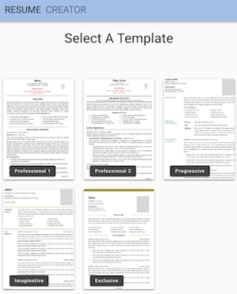
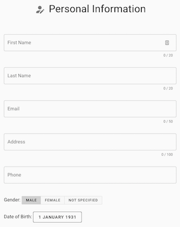
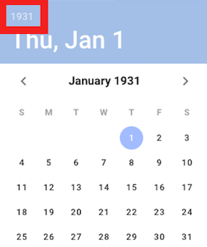
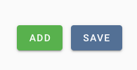
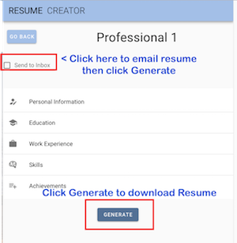

1. Select your template.

2. Complete Personal Information
then click Submit.

For date of birth, you can choose
the year quickly by clicking the top left hand corner year.

3. Complete the other fields. Click Add then Save each time
you add an educational establishment, employer, achievement or
skill.

4. A Generate button appears when you have completed all
fields. Click Send to In Box to email your CV, then click
Generate, or simply click Generate to download it.

Your CV will be a file called resume.docx. It will be
sent to your Downloads folder on your device. Finding files on
mobile devices can prove difficult. You can either search for
the file name resume.docx or just email the CV to yourself if
you cannot find it on your device.
You can, if you wish, continue to edit the CV, because it is
in Word format. You can store it on your desktop computer and
improve it over time, or you can just use it as it is.
Please let us know how you got on with the CV Maker. Use the
Contact Developer form if there are any issues. Please leave a
review on Google Play if you like it. We'd be so grateful :)